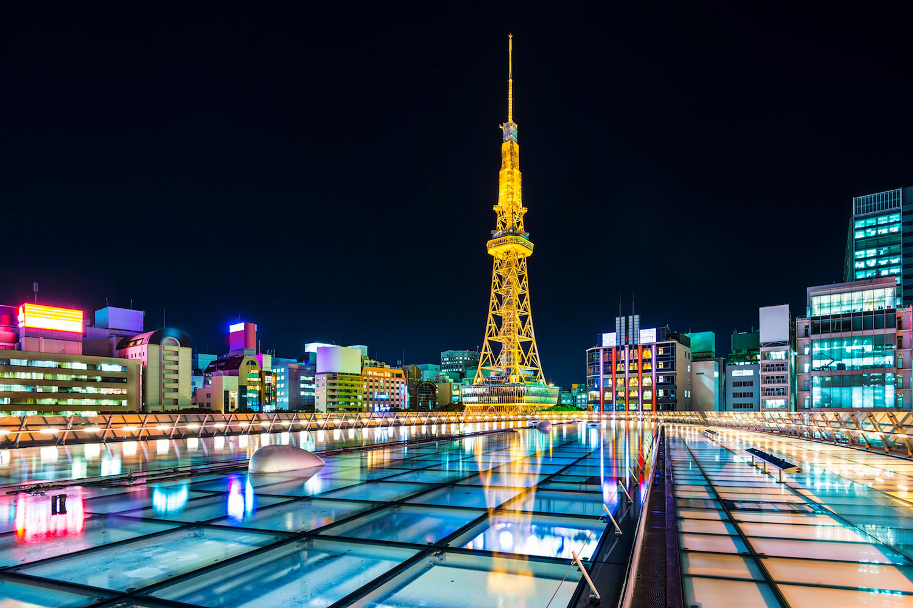

Nagoya
Nagoya est une grande ville du Japon, capitale de la préfecture d’Aichi dans la région du Chubu sur l’île principale de Honshu. La cité se compose de 16 arrondissements dont Minato au sud-ouest qui héberge le port industriel, au bord de la baie d’Ise. Avec une densité de 7.000 habitants/km², son pouvoir économique devance aujourd’hui son attractivité touristique.
Bien que souvent boudée par les visiteurs étrangers, Nagoya s'avère être la 4ème ville japonaise en terme de démographie après Tokyo, Yokohama et Osaka. Avec 2,2 millions d'habitants et jusqu'à 9 millions en comptant l'agglomération, elle se place aisément comme la plus grande mégapole du Chubu, cette vaste région entre le Kansai et le Kanto. Elle se classe même 3ème par sa superficie d'environ 326,45 km².
Largement reconstruite après les bombardements de la Seconde Guerre mondiale, la topographie quadrillée de la ville ouvre sur des quartiers agréables, la plupart accessibles notamment grâce à un habile réseau de 5 lignes de métro, par exemple: le port, le quartier de Sakae et ses commerces divertissants, ou encore le fameux château d'Oda Nobunaga (1534 - 1582), le 1er des 3 unificateurs du Japon et son enceinte qui rappelle le mode de vie des samouraïs à l'époque.